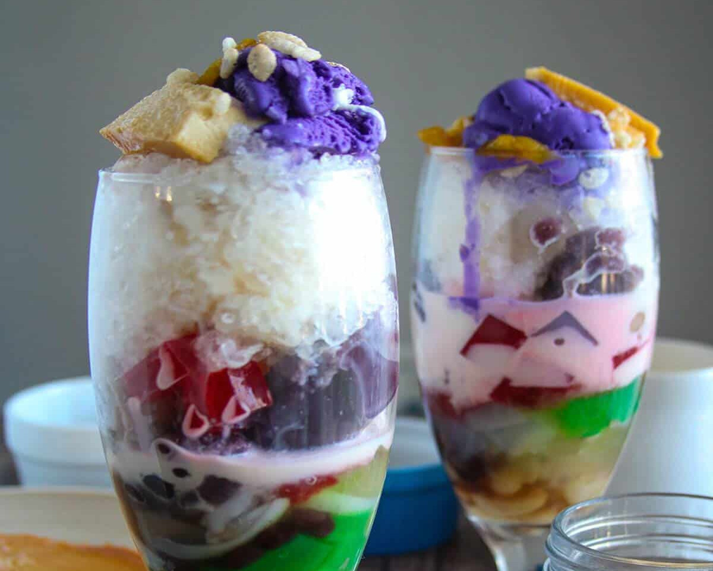
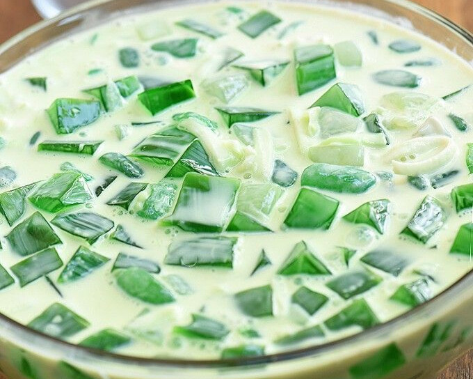
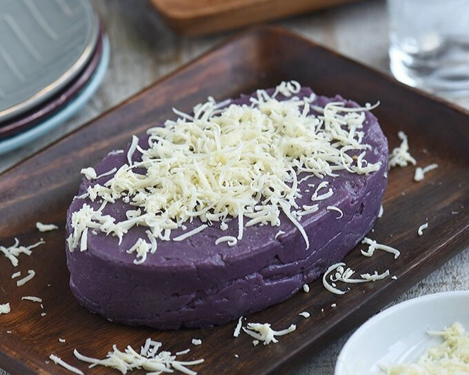
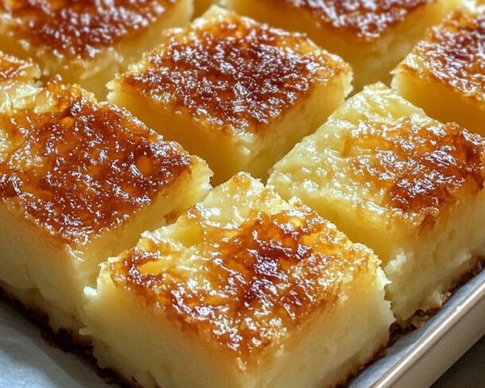
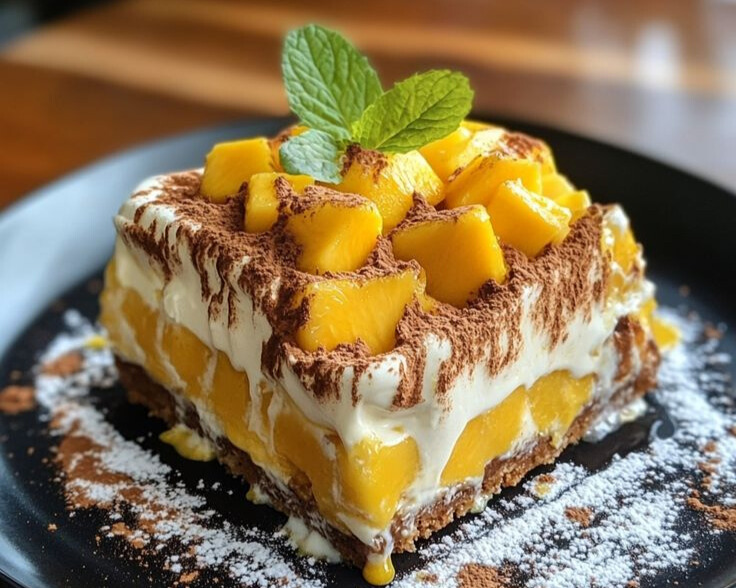
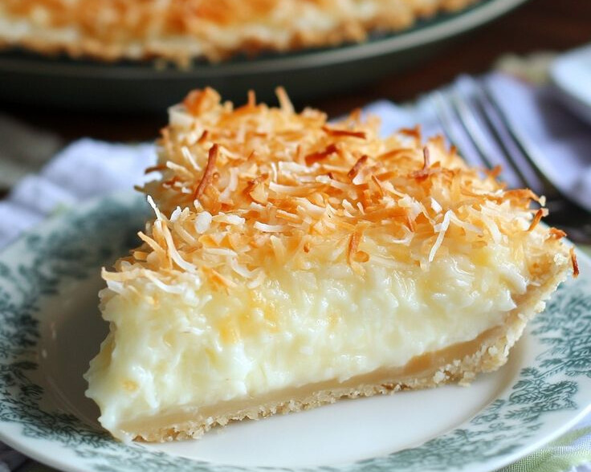
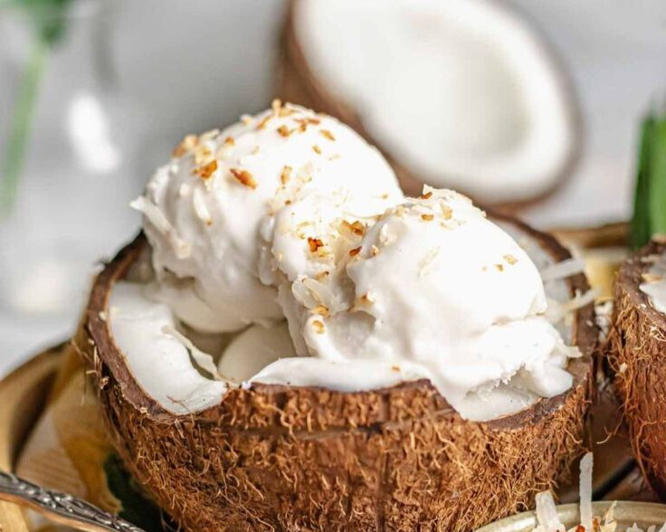
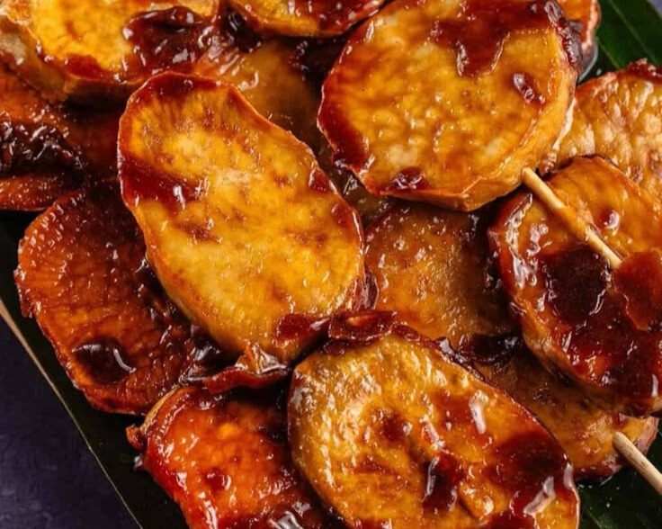

A refreshing mix of shaved ice, sweetened beans, fruits, leche flan, ube halaya, and evaporated milk. Perfect for cooling down after a beach day.

Young coconut strips and pandan-flavored gelatin in sweet cream. It’s creamy, aromatic, and very Pinoy.
Caramelized banana (and sometimes jackfruit) wrapped in lumpia wrapper and deep-fried. Crispy outside, gooey inside!

Purple yam mashed and sweetened into a rich, creamy dessert. Often topped with cheese or coconut cream.

Made from grated cassava, coconut milk, and condensed milk — soft, dense, and slightly chewy.

Layers of graham crackers, sweet mangoes, and cream. Chilled to perfection and loved by locals and tourists alike.

A flaky pie crust filled with soft young coconut meat and creamy filling. A Filipino bakery staple!

Often homemade in beach cafés, this ice cream highlights Siargao’s signature ingredient: fresh coconut!

Deep-fried caramelized sweet potatoes on skewers — a street-style treat that doubles as dessert or snack.